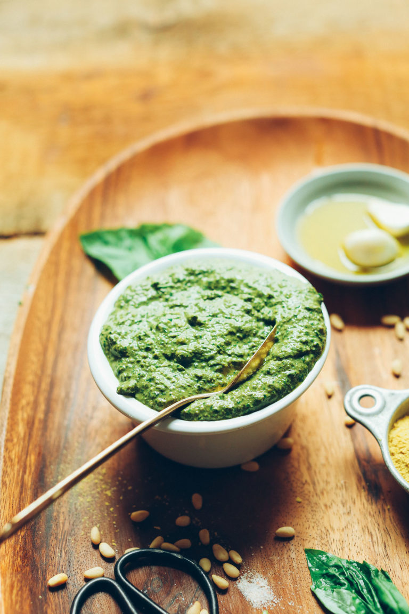

Vegan Pesto

Description
Pesto is a sauce that is believed to have originated in the Liguria region of northwestern Italy. It’s thought that it may have evolved from a 13th century garlic-based sauce called aggiadda or from the tradition of using aromatic herbs in the Middle Ages.
The first written recipe for pesto was from Giovanni Battista Ratto in his 19th century work The Genoese cuisine. This recipe was a mix of garlic, basil, and cheese
Our plant-based version skips the cheese, but is similarly packed with basil and full of flavor.
Ingredients
- 2 cups packed fresh basil (large stems removed)
- 3 Tbsp pine nuts or walnuts (if nut-free, try sunflower seeds!)
- 3 large cloves garlic (peeled)
- 2 Tbsp lemon juice
- 3-4 Tbsp nutritional yeast
- 1/4 tsp sea salt (plus more to taste)
- 2-3 Tbsp extra virgin olive oil*
- 3-6 Tbsp water (plus more as needed)
Steps
- To a food processor or small blender, add the basil, nuts, garlic, lemon juice, nutritional yeast, and sea salt and blend/mix on high until a loose paste forms.
- Add olive oil a little at a time (streaming in while the machine is on if possible) and scrape down sides as needed. Then add 1 Tbsp (15 ml) water at a time until the desired consistency is reached – a thick but pourable sauce. (If avoiding oil altogether, sub the oil with vegetable broth or just use all water.)
- Taste and adjust flavor as needed, adding more nutritional yeast for cheesy flavor, salt for overall flavor, nuts for nuttiness, garlic for bite / zing, or lemon juice for acidity.
- Perfect for adding to sauces, dressings, breads, and more! My favorite recently has been adding it straight to zucchini or carrot noodles (see photo) for a beautiful, healthy side dish
- Store leftovers covered in the refrigerator up to 1 week. After that, pour into ice cube molds, freeze, and store up to 1 month or more.